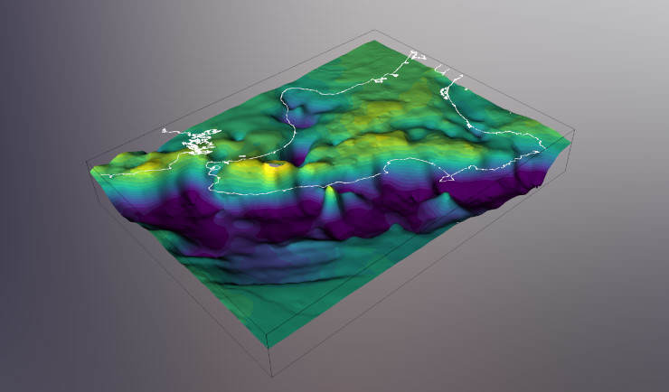
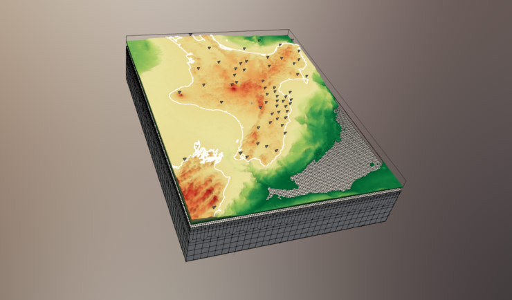
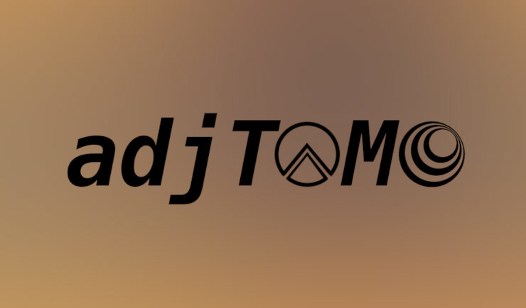

SPECFEM Users Workshop 2022
In October 2022, we held a virtual SPECFEM Users Workshop to teach new users how to use the spectral element solver, SPECFEM. Leveraging Docker containers, Jupyter notebooks and Zoom, we were able to host up to 180 participants over three days, where they learned how to run forward simulations, generate sensitivity kernels, and perform seismic inversions. Recordings and workshop material is free and available for use, check it out!

Subducted Seamounts below New Zealand
Using our new model of the Earth's crust below the North Island of New Zealand,
myself and co-authors suggested that we have imaged two previously-unrecognized
seamounts (underwater mountains) subducted below the continent. Their presence may
affect how we think about seismic activity within this region.
This work was chosen for an
Editor's highlight in Eos!

Adjoint Tomography in New Zealand
My doctoral research
(now published as a pair of companion papers:
1,
2)
involved seismic imaging of the Hikurangi subduction zone and tectonic
interpretations of newly resolved structures in the crust below
the North Island of New Zealand. We employed an imaging method known as adjoint
tomography, which seeks to minimize differences between observed
and simulated seismic waveforms.

I am developing open-source Python packages that facilitate the automation of
adjoint tomography workflows
(SeisFlows), and seismic data
handling and misfit quantification within these workflows
(Pyatoa).

New Zealand Adjoint TOMography model
One of the main products of my PhD was the
New Zealand Adjoint TOMography model (NZ ATOM).
NZ_ATOM_north is an adjoint tomography-derived velocity model for the North Island
of New Zealand, and the adjacent Hikurangi subduction zone.

Broadband EAst COast Network
The Broadband EAst COast Network (BEACON)
was a temporary deployment of 20 broadband seismic instruments in the central
Hawke's Bay and Tararua regions. The network was deployed to supplement receiver
coverage over the Hikurangi subduction interface.

Rotational Seismology
My master's work
involved analysis of amplitudes from rotational ground motion sensors. Using a
large catalog of global earthquakes, we empirically derived a rotational magnitude
scale to understand the charactersitics of amplitude decay for rotation signals.
I was also involved in development of a
rotational seismology event database.